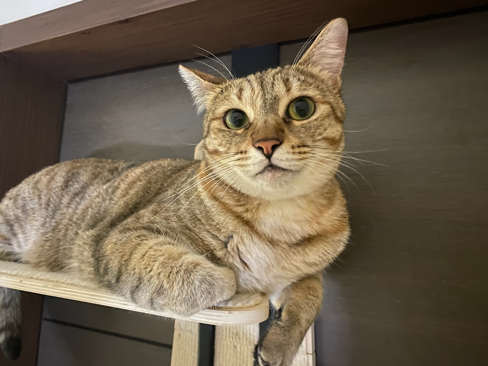

Pets
Brul Cat

Brul is known for their mysterious and aloof personality. They are independent and tend to keep to themselves but have a strong bond with their owner. Brul enjoys quiet moments of contemplation and can be playful when the mood strikes.
Brul loves lounging in sunny spots, where their dark fur absorbs the warmth. They enjoy being brushed regularly to maintain their luxurious coat. Occasionally, they engage in hunting-like play with toys.
Photo Gallery


Likes
- Sleeping
- running
- Sneaking onto the couch
Cody Dog

Cody is an enchanting Corgi with a personality as bright and cheerful as his distinctive appearance. With his short stature, elongated body, and those irresistibly fluffy ears, he's a bundle of charm that's impossible to resist. His expressive, dark eyes are like windows to his playful soul, always brimming with curiosity and enthusiasm.
Cody's coat is a rich blend of caramel and white, a perfect match for his vivacious spirit. He carries himself with an endearing confidence, his tail constantly wagging in a joyful rhythm. Whether he's frolicking in the park or cozying up on the couch, Cody's presence is an instant mood lifter.
Photo Gallery


Likes
- Playtime Galore
- Tasty Treats
- Cuddles and Belly Rubs
Goblue Cat

Goblue, the British Shorthair Cat, is a charming and distinctive feline with a warm, brownish coat that exudes an air of regal elegance. His fur, reminiscent of rich mahogany wood, is plush and velvety, offering a striking contrast to his round, expressive golden eyes. Goblue's sturdy build and well-defined features make him a true epitome of British Shorthair breed standards.
Despite his dignified appearance, Goblue has a playful and affectionate personality that endears him to everyone he encounters. This charming cat possesses an irresistible charm that leaves a lasting impression on anyone lucky enough to cross his path. His gentle and friendly disposition makes him an ideal companion for both adults and children.
Photo Gallery

Likes
- Plush Blankets
- Chasing Feather Toys
- Sunbathing by the Window
Hua Hua Cat

Hua Hua is an elegant and regal British Shorthair cat with a striking black and white coat that exudes sophistication and charm. His jet-black fur is a perfect canvas for his contrasting white markings, which gracefully frame his round, expressive eyes and soft, plush cheeks. His compact and muscular body is a testament to his breed's sturdy and robust nature, making him the epitome of feline grace and strength.
Hua Hua has a personality as unique as his appearance. He is a dignified and composed feline companion who carries himself with an air of quiet confidence. While he may seem reserved at first, those who get to know him quickly discover his gentle and loving nature. He enjoys lounging in sunny spots around the house, where his striking coat gleams like a work of art in the natural light.
Photo Gallery
Likes
- Grooming Sessions
- Cozy Hideaways
- Playtime with Feather Toys
Santa Cat

Santa is a mysterious and enchanting black cat with sleek, glossy fur that glistens like the midnight sky. His emerald-green eyes are like two gleaming stars that twinkle with an otherworldly wisdom. Santa's graceful and agile movements make him appear as if he's gliding through the shadows, leaving an aura of elegance in his wake.
His charmingly enigmatic personality adds to his allure, as he often seems to be hiding secrets known only to him. Santa's presence brings an air of magic and curiosity wherever he goes, captivating all who have the privilege of meeting him.
Photo Gallery


Likes
- Moonlit Adventures
- Cozy Hideaways
- Feathered Friends